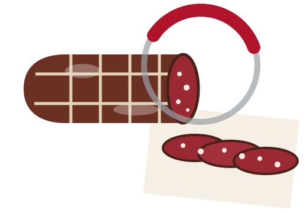

Salame a grana grossa, ricostruito in 3D. Trascina o scorri per affettarlo. [foto del prodotto reale da fornire]

Fette sul banco: 0
N° 01 · Il banco · Via Domenico Fiasella 28R
Affettato al momento, in Via Fiasella.
Gotti e Panetti è un'affetteria nel centro di Genova, a pochi passi da Via XX Settembre. Al banco: salumi e formaggi tagliati quando li chiedi, panini e focacce preparati sul momento, vino al bicchiere e caffè.
Il nome dice già tutto: gotti, i bicchieri; panetti, i panini. Da dove viene.
Dal banco
Cinque panini che i clienti ricordano per nome.
Cotto, noci e pinoli
€ —Prosciutto cotto con noci e pinoli.
Arrosto e radicchio
€ —Arrosto con crema di radicchio.
Arrosto e pesto
€ —L'arrosto incontra il pesto genovese.
Falsomagro e tartufo
€ —Falsomagro al vino bianco con crema di tartufo.
Mortadella e pomodoro
€ —Mortadella con patè di pomodoro.
Abbinamenti citati nelle recensioni online. Disponibilità e prezzi [DA CONFERMARE]
La giornata
Dal primo caffè al bicchiere della sera.
GOTTI E PANETTI
Via D. Fiasella 28R · 16121 Genova
- Colazione
- caffè al banco
- Pausa pranzo
- panini, focacce, taglieri
- Sera
- vino al bicchiere
- Asporto
- sì
- Spesa media*
- 15–20 € a persona
Orari: le fonti online non coincidono [DA CONFERMARE]
* indicazione da guide online, da verificare
Chi ci è passato
Le recensioni le scrivono i clienti, non noi.
Nei commenti tornano la qualità del prosciutto, i panini fatti al momento e un'accoglienza che fa sentire di casa.
Valori rilevati online, da aggiornare alla pubblicazione [DA CONFERMARE]
Prendi il numero